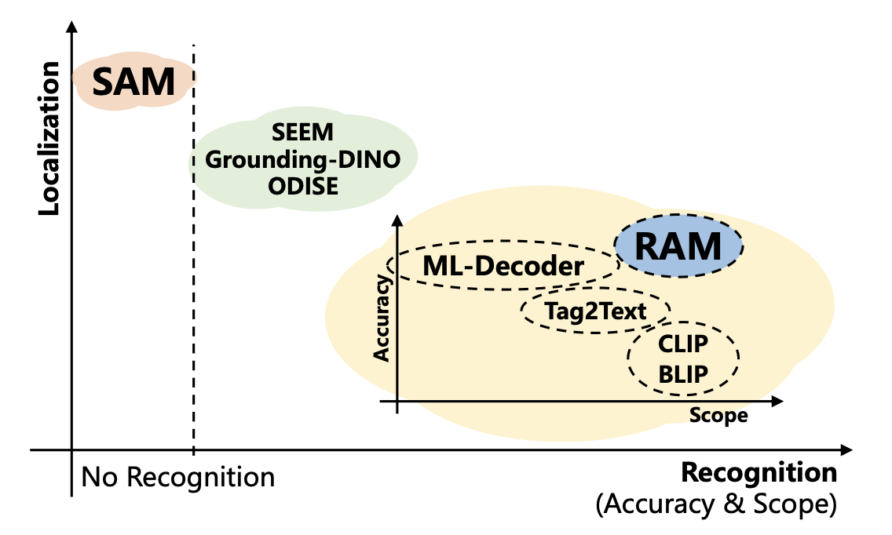
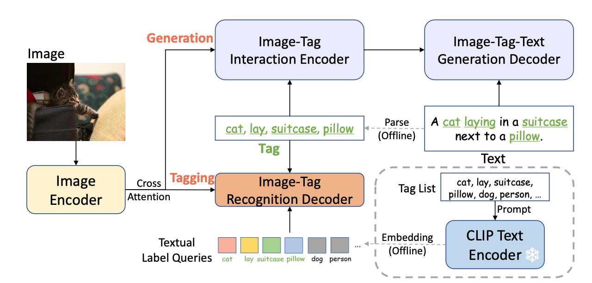
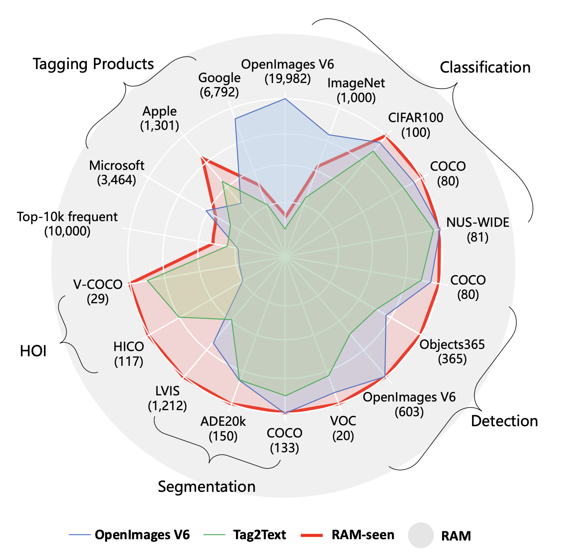
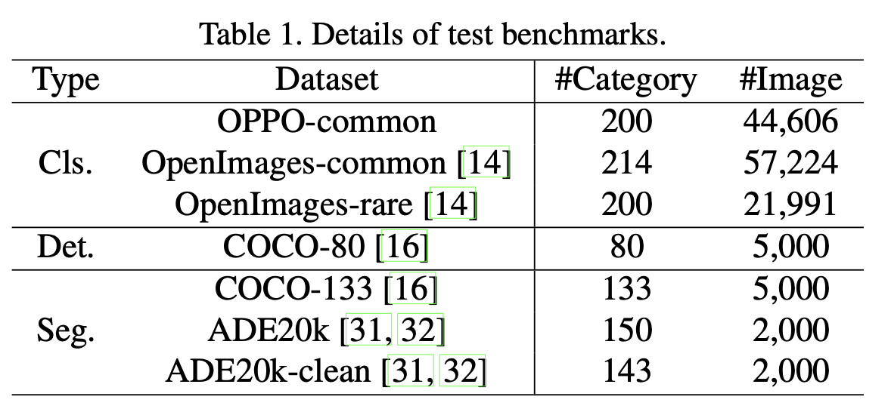
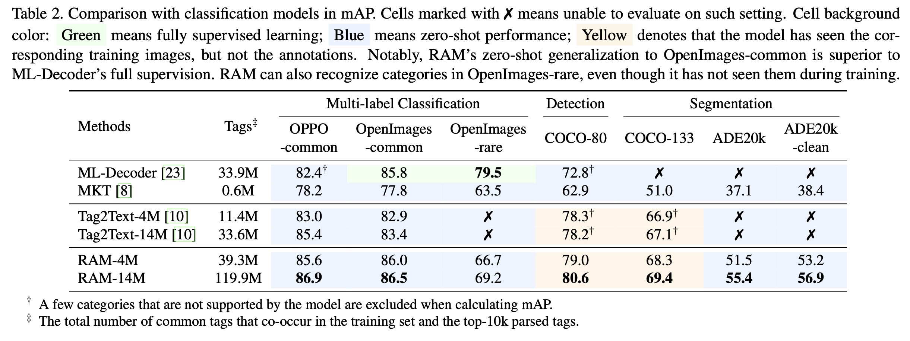
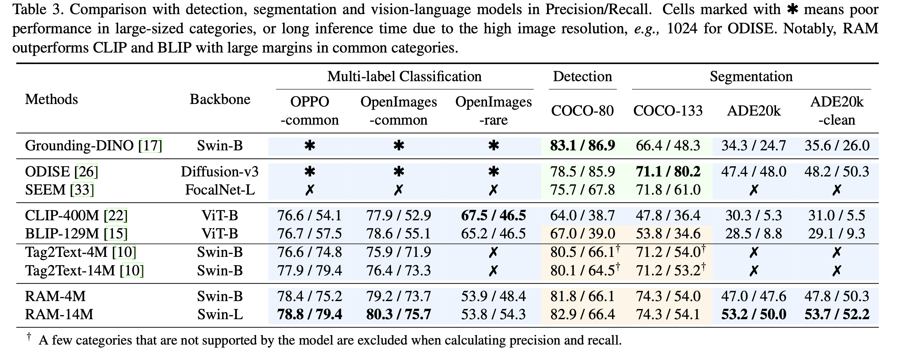
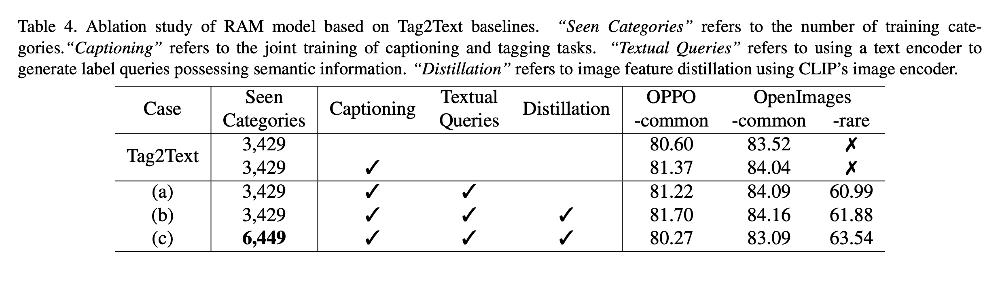
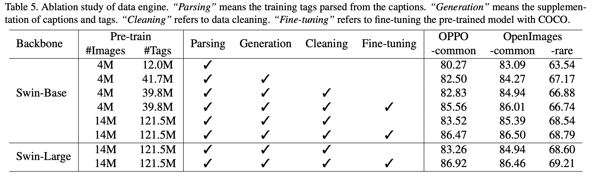

Recognize Anything: A Strong Image Tagging Model¶
0. Abstract¶
- 本文提出了RAM：一种strong foundation的image tagging模型，是computer vision关于大模型非常重要进步。
- 本方法证明了高准确率识别任何类目tag的Zero-shot能力。
- 本方法利用大规模image-text pairs解决image tagging问题，而非人工标注数据。
- 4个关键步骤：
- 通过规模化automatic text semantic parsing获得大量免标注的image tags。
- 通过自动化标注的数据，分别利用original texts和parsed tags，联合caption task和tagging task，训练一个初步的模型。
- 利用数据引擎（data engine）去生成另外的标注数据，并且剔除不正确的数据。
- 最后，利用处理后的数据去retrain模型，并利用更小但是高质量的数据fine-tuned模型。
- 最终证明模型效果超过CLIP、BLIP等，展现强大的zero-shot能力。
1. Introduction¶
- 基于大规模的网上web数据集训练的LLM，点燃了一场NLP领域突破性的创新。展现了强大的Zero Shot能力，使它们能够泛化到训练领域之外的任务和数据分布。
- 对与CV领域来说，Segment Anything（SAM）通过加大数据规模，也展现了显著的Zero Shot能力；但是SAM缺乏语义标注能力，这项能力与图片定位localization同等地重要。
- image多标签识别，即image tagging，对于给定的image，通过多标签识别，旨在提供图片语义标签能力。
- image本身包含objects（实体），scenes（场景），attributes（属性），actions（动作），所以固有地就包含多标签。遗憾地是当前显存的一些多标签分类、识别、分割、vision-language方法，在image tagging还存在一些不足，如下图所示，存在 limited scopes和poor accuracy。
- 有两个关键问题阻碍image tagging的进步：
- 如何收集大规模高质量的数据集，特别是缺乏一个通用和一致统一的标注系统和高效低数据标注引擎，能够半自动甚至自动标注具有大量类别的大型图像。
- 缺乏高效灵活的模型设计来利用大规模的弱监督数据来构建开放词汇表（标签）和强大的模型。
- 为了解决上述两个瓶颈问题，本文提出了RAM，一个强大image tagging基础模型，RAM成功克服了数据、标注系统、数据集和数据引擎相关挑战以及模型设计的缺陷。
- Label System：本文首先建立一个通用的、统一的标签系统，我们结合了来自流行的学术数据集(分类、检测和分割)以及商业标签产品(谷歌、微软、苹果)的类别。把公共的tags和从text获得的公共的tags进行合并，覆盖大部分的公共标签，数量规模适中，6449个。剩余的开放词汇标签可以通过开放集识别（open-set recognition）进行识别。
- DataSet：如何利用标注系统，自动化标注大规模的图片数据，是另一个挑战。受到大规模利用公开可用的图像-文本对（image-text pairs）来训练强大的视觉模型的CLIP和ALIGN的启发，本文采用了相似的数据来完成image tagging。为了有效利用这些大规模的image-text数据来处理tagging，通过自动化文本语义解析系统解析texts，并获得了标签数据。经过这些数据，我们获得了大量多样化的免标注的image tags，并与image-text对保持一致。
- Data Engine：从网络公开渠道获得的image-text pair数据天生就带有一定的噪声，通常会缺失标签或者拥有错误的标签。我们首先定位图像中不同标签对应的特定区域。随后，我们采用区域聚类技术来识别和消除同一类中的异常值。此外，我们过滤掉了在整个图像及其相应区域之间表现出相反预测的标签，确保了更清晰、更准确的标注。
- Model：Tag2Text被证明强大的图片打标的能力，将图片打标和和标题生成集成于一体，通过一个轻量级的recognition decoder，并连接一个初始的image encoder。但是Tag2Text的能力只能被限定在固定的label目录或者预定义的label目标。
2. Recognize Anything Model¶
2.1 Model Architecture¶
- 如下图所示：
- (1). an image encoder：提取图片的特征；
- (2). an image-tag recognition decoder：生成tags；
- (3). a text generation encoder-decoder：生成caption；
- (4). an image encoder 与 an image-tag recognition decoder 利用 cross-attention layer做交互特征信息；
- (5). an image encoder 与a text generation encoder-decoder 也利用cross-attention layer做交互特征信息；
- (6).在训练阶段，recognition头（recognition head）学习从text中预测tags；在推理阶段，recognition头（recognition head）预测tags，可以显示为image caption生成提供了显式的语义信息，起到了image-to-tags bridge的作用；
- (7).与tag2text对比，RAM核心提升点：开放词汇表范围内的tag识别；
2.2 Open-Vocabulary Recognition¶
- Textual Label Queries：受到前人方法 [23, 28]的启发，关键的改进在于将语义信息整合到识别解码器的标签查询中，这有助于在训练阶段对以前未见过的类别进行泛化。为了实现这一点，我们利用现成的文本编码器对标记列表中的单个标记进行编码，从而提供具有语义丰富上下文的文本标签查询。相比之下，前人方法 [10, 18]的原始识别解码中使用的标签查询是随机可学习的嵌入，缺乏与未见类别的语义关系，因此仅限于预定义的可见类别。
- Implementation Details：我们采用Swin-transformer作为图像编码器，因为它在视觉语言和标记领域都比naive ViT表现出更好的性能。用于文本生成的编码器-解码器为12层transformer，标签识别的解码器为2层transformer。我们利用CLIP现成的文本编码器并执行提示集成来获得文本标签查询。我们还采用了CLIP图像编码器提取图像特征，通过图像-文本特征对齐进一步提高了模型对未见类别的识别能力。
2.3. Model Efficiency¶
- Training Phase：RAM在分辨率为224的大规模数据集上进行预训练，并使用小而高质量的数据集在分辨率为384的情况下进行微调。经验证据表明，RAM收敛速度很快，通常在最小的迭代次数(通常少于5个迭代)之后实现收敛。这种加速的收敛增强了有限计算资源下RAM的再现性（reproducibility）。为了说明这一点，在400万张图像上进行预训练的RAM版本需要1天的计算，而在1400万张图像上进行预训练的RAM最强版本只需要在8个A100 gpu上进行3天的计算。
- Inference Phase：轻量级的图像-标签识别解码器有效地保证了RAM对图像标签的推理效率。此外，我们从识别解码器中消除了self-attention layers，这不仅进一步提高了效率，而且还避免了标签查询之间的潜在干扰。因此，RAM允许对任何想要自动识别的类别和数量自定义标签查询，而不是固定的类别和数量，从而增强了它在各种可视化任务和数据集中的实用性。
3. Data¶
3.1 Label System¶
Label System的三个指导原则： 1）频繁性：在图像-文本对中频繁出现的标签（由于其在图像描述中的代表性意义）而更有价值。 2）多样性：各种各样领域的任务和上下文应该在标签中表示出来。我们对标签的概念包括来自各种来源的对象、场景、属性和动作，这有助于将模型推广到复杂的、看不见的场景。 3)适中性：标签的数量要适中。过多的标签数量会导致大量的注释成本。
- 开始起初，我们通过使用“少量修改的SceneGraphParser[25]”对预训练数据集中的1400万个句子，将其解析为标签。
- 然后，我们从最频繁出现的前10k个标签中手工挑选标签。我们的选择有意涵盖标签从众多流行的数据集分类，检测，和分割。如下图所示：虽然大多数都是完全覆盖的，但例外情况包括ImageNet和OpenImages V6，因为它们存在不太正常（unusual）的标记。
- 此外，我们还部分介绍了来自领先标签产品的标签，这些标签是通过使用开源图像的公共api[2,3,1]获得的。
- 因此，RAM最多可以识别6449个固定标签，这大大超过了Tag2Text，并且包含了更高比例的有价值标签。
- 为了减少冗余，我们通过各种方法收集同义词，包括手动检查，参考WordNet[7]，翻译和合并标签等。同一同义词组中的标签被分配相同的标签ID，标签系统中共有4585个标签（tag）ID。
3.2 Datasets¶
- 与BLIP和Tag2Text类似，我们在广泛使用的开源数据集上预训练我们的模型，分别采用了400万(4M)图像和1400万(14M)图像。
- 400万(4M)图像：包括两个人类注释的数据集，COCO(113K图像，557K上限)和Visual Genome(101K图像，822K上限)，以及两个大规模的基于web的数据集，conceptual Captions (3M图像，3M字幕)和SBU Captions(849K图像，849K字幕)。
- 1400万(14M)图像：建立在4M的基础上，增加了概念12M (10M图像，10M字幕)。
3.3. Data Engine¶
- 考虑到我们的训练数据集主要是开源的性质，这些数据集主要是从互联网上抓取的，我们遇到了大量的缺失和错误标签。为了减轻这种情况，我们设计了一个自动数据引擎（Data Engine）来生成额外的标签并清除错误的标签。
- Generation：我们的第一步涉及使用从这些标题中解析的标题和标签来训练基线模型，类似于Tag2Text中使用的方法。然后我们利用这个基线模型来补充标题和标签，分别利用它的生成和标记能力。原始的标题和标签与生成的标题、相应的解析标签和生成的标签合并形成一个临时数据集。这一步显著地将4M图像数据集中的标签数量从1200万扩展到3980万。
- Cleaning：为了解决不正确标签的问题，我们先使用Grounding-Dino来识别和裁剪所有图像中对应于特定类别的区域。然后，我们基于k-means++对该类别的区域进行聚类，并剔除与10%异常值相关的标签。同时，我们还使用基线模型去除没有预测该指定类别的标签。其动机：通过预测区域而不是整个图像，可以提高标记模型的精度。
4.Experiment¶
- 测试集：
- 效果： 
- 消融实验： 
5.Conclusion¶
- 本文提出了一种用于图像标记的强大基础模型——识别任意物体模型(RAM)，它预示着该领域的新范式。RAM展示了Zero-shot能力，以高精度识别任何类别，超过了完全监督模型和现有的通用方法，如CLIP和BLIP的性能。RAM代表了计算机视觉领域大规模模型的巨大进步，具有增强任何视觉任务或数据集识别能力的潜力。
- RAM仍有进一步改进的空间，例如，将训练数据集扩展到超过1400万张图像以更好地覆盖不同的领域，多轮数据引擎（ Data Engine），增加模型骨干参数以增强模型容量。
- Limitations：与CLIP类似，当前版本的RAM可以有效地识别常见的对象和场景，但在对象计数等抽象任务上仍存在困难。此外，在细粒度分类中，RAM的zero-shot性能落后于特定任务的模型，例如区分汽车模型或识别特定的花卉或鸟类。同样值得注意的是，RAM是在开源数据集上训练的，可能会出现数据集的偏差。